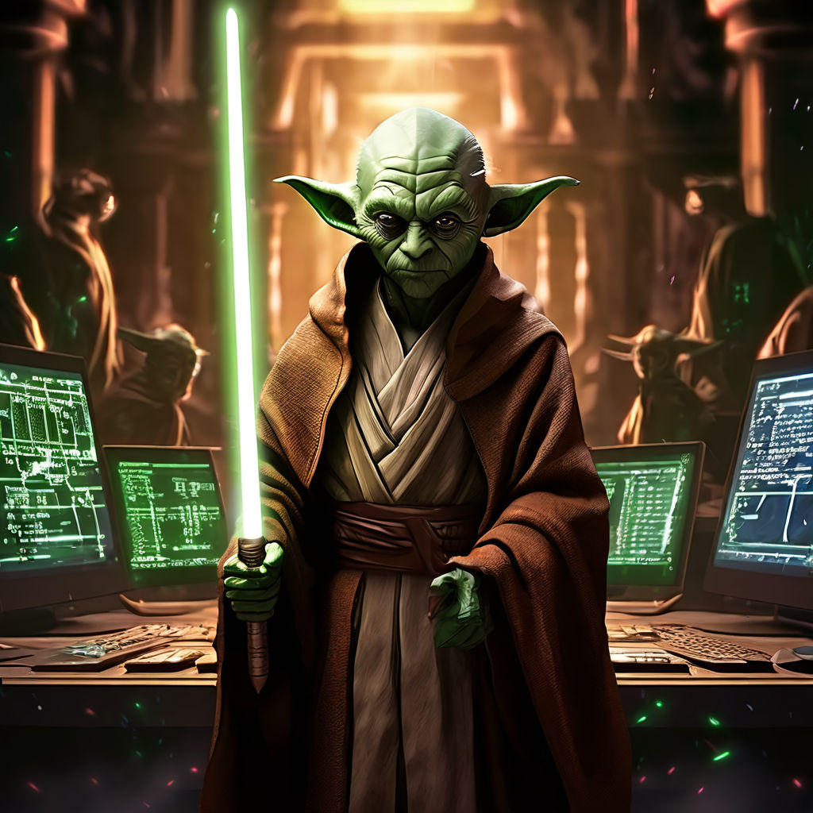
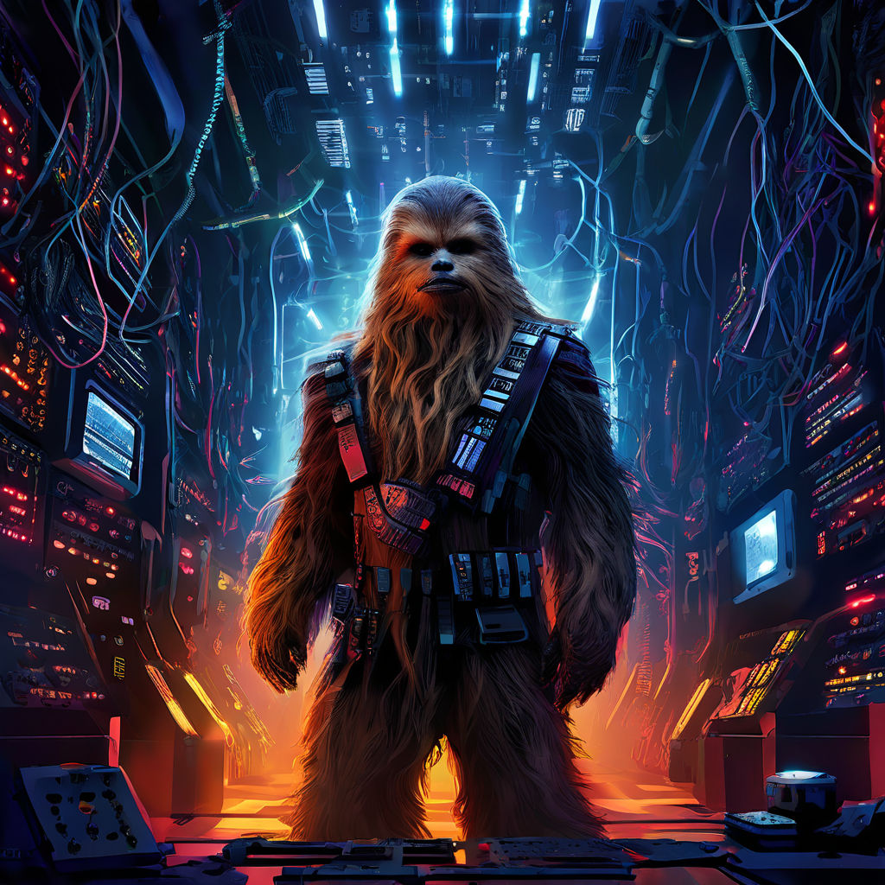

-
Darth Codder
Descrição
Darth Codder, o mestre do lado negro do código, domina a arte do back-end com seu poderoso PHP. Seus deploys são tão temidos quanto sua presença em reuniões de sprint. "Eu sou seu DevOps" é uma de suas frases mais icônicas.
-
Luke Skywaker
Descrição
Conhecido por sempre caminhar na linha do front-end, Luke Skywaker usa a Força do JavaScript para criar interfaces que impressionam qualquer mestre Jedi do Dev. Quando não está codando, ele está aperfeiçoando seu sabre de luz de LED RGB.
-
Leia OrgaNerd

Descrição
Leia OrgaNerd é a princesa da documentação e gestão de projetos. Com seu software de gestão de tarefas e um plano de projeto impecável, ela garante que cada release seja uma vitória para a Rebelião dos Devs.
-
Yodacoder
Descrição
O sábio Yodacoder é o mentor que todo Dev precisa. Mestre no uso de frameworks e bibliotecas, ele transforma linhas de código em pura sabedoria. "Debugar você deve, paciência ter você precisa."
-
Han Solodev

Descrição
Han Solodev é o desenvolvedor freelancer que vive por conta própria no universo do Dev. Com seu conhecimento em várias linguagens de programação e um charme inigualável, ele sempre tem uma solução rápida e improvisada para qualquer bug.
-
Chewback-end
Descrição
Chewback-end é o guerreiro do servidor. Com suas habilidades em Node.js e MongoDB, ele garante que todas as aplicações rodem suavemente no back-end. Sua comunicação pode ser um pouco difícil de entender, mas seu código é impecável.